forth-bin — FUSE
bisect — SSX · TZX · bisect.fth
brentrot — SSX · TZX · brentrot.fth
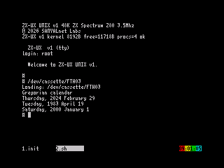
calendar — SSX · TZX · calendar.fth
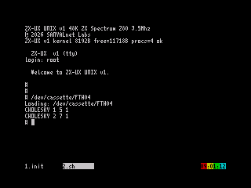
cholesky — SSX · TZX · cholesky.fth
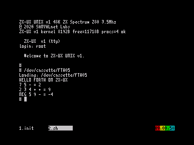
demo — SSX · TZX · demo.fth
demo10 — SSX · TZX · demo10.fth
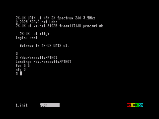
demo11 — SSX · TZX · demo11.fth
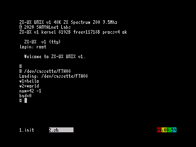
demo12 — SSX · TZX · demo12.fth
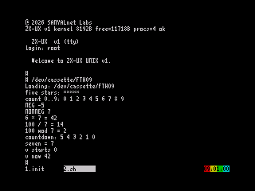
demo2 — SSX · TZX · demo2.fth
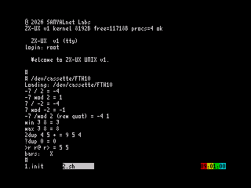
demo3 — SSX · TZX · demo3.fth
demo4 — SSX · TZX · demo4.fth
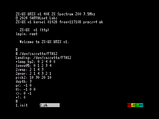
demo5 — SSX · TZX · demo5.fth
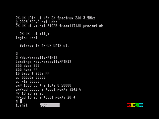
demo6 — SSX · TZX · demo6.fth
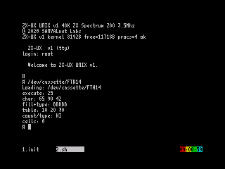
demo7 — SSX · TZX · demo7.fth
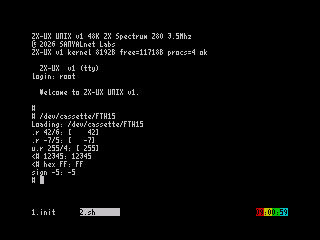
demo8 — SSX · TZX · demo8.fth
demo9 — SSX · TZX · demo9.fth
eulerode — SSX · TZX · eulerode.fth
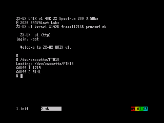
gauss1d — SSX · TZX · gauss1d.fth
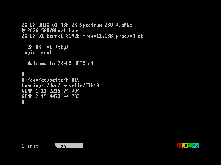
gemm8bit — SSX · TZX · gemm8bit.fth
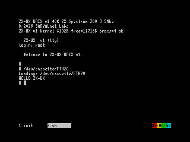
hello — SSX · TZX · hello.fth
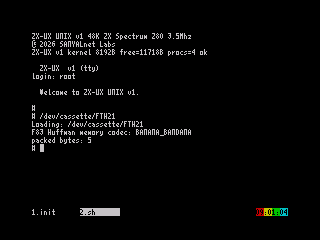
hufdemo — SSX · TZX · hufdemo.fth
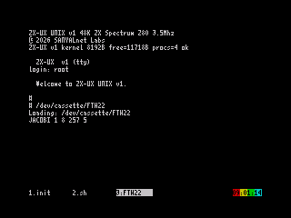
jacrelx — SSX · TZX · jacrelx.fth
lcgrand — SSX · TZX · lcgrand.fth
lupivot — SSX · TZX · lupivot.fth
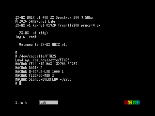
machar — SSX · TZX · machar.fth
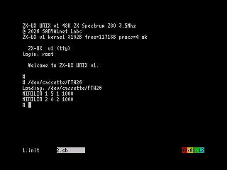
minilin — SSX · TZX · minilin.fth
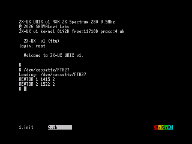
newton — SSX · TZX · newton.fth
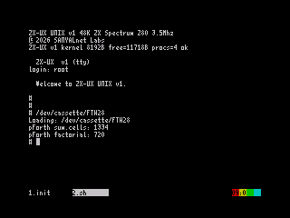
pfbench — SSX · TZX · pfbench.fth
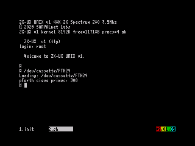
pfsieve — SSX · TZX · pfsieve.fth
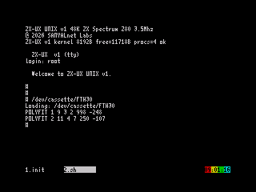
polyfit — SSX · TZX · polyfit.fth
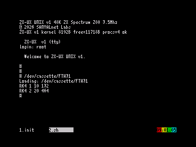
rk4fixed — SSX · TZX · rk4fixed.fth
romberg — SSX · TZX · romberg.fth
simpson — SSX · TZX · simpson.fth
square — SSX · TZX · square.fth
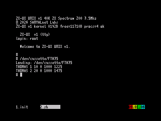
thomastr — SSX · TZX · thomastr.fth
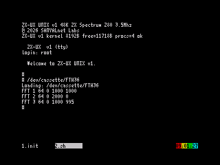
tinyfft — SSX · TZX · tinyfft.fth
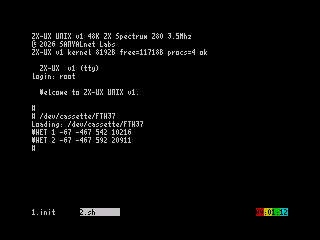
whetston — SSX · TZX · whetston.fth
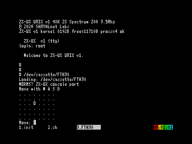
worms — SSX · TZX · worms.fth